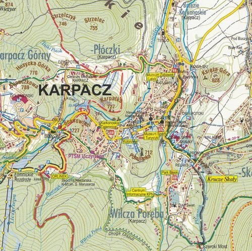

Karpacz– miasto w województwie dolnośląskim, w powiecie karkonoskim. Położone w Sudetach Zachodnich, w dolinie rzeki Łomnicy. Miastem jest (prawa miejskie) od 1 stycznia 1960 r. Według danych GUS z 31 grudnia 2019 r. miasto miało 4570 mieszkańców
 Mapa Karpacza